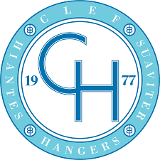
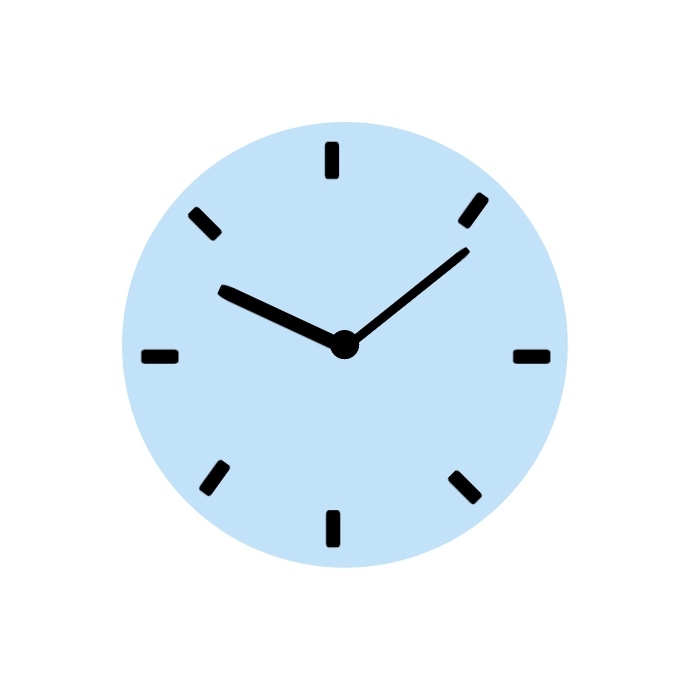
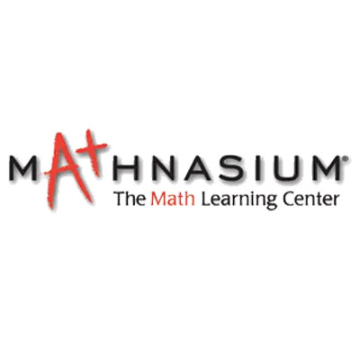

City of South Haven | Internship
May 2024 - July 2024, 3 months
Developed a plan in conjunction with city stakeholders and government officials that expands upon and improves the city’s recreational infrastructure
Designed recreational proposals aimed to increase the year-round retention of young professionals and families
Produced website landing pages for recreational projects jointly with local recreational authorities
Collaborated closely with team members to present a comprehensive final deliverable to city officials, overcoming challenges and ensuring alignment with stakeholder goals

Publicity Director | Fall Tour Manager | Winter Concert Manager
UNC-CH Clef Hangers | Group Member, Tenor II
August 2023 - Present, 11 months
Spearhead the management of the group's Instagram (10,000+ followers), TikTok, YouTube, and website, enhancing online presence and engagement through strategic content creation and graphic design
Drive outreach initiatives to promote group activities and events, building connections and increasing visibility across multiple platforms
Directed the comprehensive planning and logistics for the group's winter concert, coordinating schedules, resources, and communications to ensure a successful event

Gap Year
Morehead-Cain Scholarship | Career Break
June 2022 - August 2023, 1 year 3 months
Through the Morehead-Cain Scholarship, I took a gap year before entering university. It was an incredibly formative experience that allowed me to volunteer, deeply explore my interests, gain new skills, immerse myself in new cultures, and bring into focus my career and life goals.
You can find out more about my experience here (WIP)
Floor Associate
Marshalls | Part-Time Job
October 2022 - December 2022, 3 months
Delivered exceptional customer service, earning frequent commendations from management and customers
Assisted customers on the sales floor, providing product information and personalized recommendations
Operated cash register efficiently, managing transactions with accuracy and speed
Collaborated with team members to meet daily sales goals and provide a seamless shopping experience

Instructor
Mathnasium | Part-Time Job
May 2021 - January 2022, 9 months
Delivered personalized math tutoring for students ranging from kindergarten to high school, adapting lessons to meet a diverse range of learning needs and abilities
Achieved measurable improvements in students' math proficiency: every students showed significant progress in test scores and overall comprehension
Navigated different age groups and temperaments, improving my ability to communicate effectively